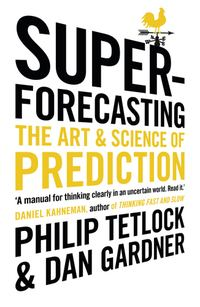

Superforecasting
Philip E. Tetlock and Dan Gardner good read 2026
A book about thinking better, written as a book about forecasting. Take in every point of view, update in small steps, and keep score.

Write-up
The thesis in a sentence
Good judgement is not a gift but a practice: look at every question from as many angles as you can find, listen hardest to the people who see it differently, commit to a precise probability, update in small steps as the evidence comes in, and keep score so the whole system keeps getting better. The ordinary people who do this relentlessly beat the experts who don't.
What I took from it
Foxes beat hedgehogs. Tetlock's earlier research found that the average expert forecaster did little better than chance, but that the average hid two very different kinds of people. Hedgehogs know one big thing and fit every question into it. Foxes know many small things, borrow from whichever framework fits, and are comfortable saying "it depends" and "I'm not sure." The foxes were the better forecasters. And the more famous the expert, the worse the forecasts tended to be, which is the part that stays with me: the confident single story that gets you on television is exactly what makes you wrong.
You cannot improve what you do not score. The Brier score measures how far your probabilities were from what actually happened: zero is perfect, and every confident miss is punished. Two things follow from it that I had not properly thought through. A forecast has to be precise enough to be scored. "A serious possibility" or "could well happen" can never be wrong, which is exactly why it is useless. And calibration and resolution are separate skills: being right on average about how often your 70% calls come true, and being willing to move away from 50% at all. I was already debating a Brier score for my own forecasts, and the book settled it.
Break the question down until the pieces can be estimated. This is the Fermi method, named after the physicist who liked to ask his students how many piano tuners there were in Chicago. A question nobody can answer directly turns into a chain of smaller ones that can be answered roughly, and the errors in each tend to cancel rather than compound. It was the idea I remembered least clearly, but the principle is simple: never stare at the big question when you can decompose it, and keep asking related questions until the estimate is built from parts rather than pulled out of the air.
Outside view first, then inside view. Start with the base rate, meaning how often things like this happen in general, and only then adjust for what makes this case particular. People do it the other way round: they get absorbed in the story of the case in front of them and anchor on it. I already worked this way, but the book gave the habit a name and an order.
Update often, and in small steps. This is the biggest takeaway for me. Superforecasters revise their forecasts constantly, but usually by small amounts. There are two ways to get it wrong: under-reacting because you are attached to your first view, and over-reacting to whatever the latest headline says. The discipline is treating each new piece of evidence as a nudge rather than as a verdict, which is Bayesian updating in practice even for the people who never write down the formula. This is the one I intend to apply most directly, in my investing.
Granularity is real. The best forecasters distinguish 60% from 65%, and the difference is not cosmetic: rounding their forecasts to the nearest ten points made them measurably less accurate. I had assumed that fine-grained probabilities were false precision. For the people who have earned it through practice, they are information.
Perpetual beta. I remembered this one as being about humility. It is closer to treating every belief as a draft: a hypothesis you keep testing, with a commitment to finding out where you went wrong and getting better. That includes post-mortems on the forecasts that turned out right, because an outcome that went your way can hide a process that was wrong and got lucky. Tetlock found this commitment to self-improvement was a stronger predictor of being a superforecaster than raw intelligence.
For superforecasters, beliefs are hypotheses to be tested, not treasures to be guarded.
The crowd knows more than any one person in it. The classic example is Francis Galton at a county fair, where hundreds of people guessed the weight of an ox and the crowd's combined guess came almost exactly to the right answer, closer than almost any individual guess. It is not that the crowd is wise. Each guess is some real information plus some error, and when the errors point in different directions they cancel, leaving the information behind. The condition is that the guesses have to be diverse and independent. A crowd that has talked itself into the same view, or that is all reading the same source, has correlated errors, and those add up instead of cancelling. That is the same lesson as diversification: a hundred opinions that all move together are really one opinion.
Teams beat individuals, when they are run properly. The Good Judgment Project took the idea further. Putting forecasters in teams made them more accurate, not more prone to groupthink, provided the culture was one of respectful disagreement: precise questions, challenged assumptions, no deference for its own sake. And the best aggregate was not a simple average. Averaging a crowd drags the result towards 50%, because each forecaster holds only part of the information. Pushing the combined number further out, which they called extremizing, recovers what no single member knew on their own. The crowd beats the individual, the right crowd beats the crowd, and the right crowd aggregated well beats both. This gave me ideas I want to come back to.
The whole thing is a pipeline, not a trick. What impressed me most is that superforecasters have built a whole mental system for themselves that they can iterate on and improve. Triage the question, decompose it, take the outside view, adjust with the inside view, gather other perspectives and synthesise them, commit to a precise number, update as evidence arrives, score the result, and learn from the error. Tetlock's image for the synthesis step is the dragonfly eye: thousands of lenses, each seeing a slightly different picture, combined into one view. That is my main takeaway. Hold every point of view you can find, pay particular attention to the people who think differently from you, and put it all through a system that is well calibrated and honest about its own record.
Where I disagree, and where it is weak
I don't have real complaints. What I liked most is that the book practises what it preaches: it takes on the strongest objections to its own argument, from Nassim Taleb's case that the events that matter are black swans nobody can forecast to Daniel Kahneman's doubts about whether anyone really escapes the biases he spent his career documenting. It gives them fair room and concedes where they land. A book about seeking out opposing views that sought out opposing views is rarer than it should be.
It does overlap with Thinking, Fast and Slow, which covers a lot of the same psychology, and it can be repetitive in places, circling back to the same points more times than it needs to.
What I would actually change
Track my calls and score them. Funnily enough, I had already started doing this publicly on this site before reading the book, with dated theses for the positions I hold, so the book reinforced a habit rather than creating one. What it adds is the method: probabilities precise enough to be scored, a Brier score kept over time, small and frequent updates rather than occasional lurches, and considerably more effort in the analysis itself. That means the question decomposed and the view of someone who disagrees with me actively sought out before I commit.
Who it is for
Anyone who wants to think about thinking, and who is open to finding out that their own systems and models might be flawed and willing to learn what actually works in forecasting.
More broadly, everyone. Life is a constant series of forecasts: which job to take, what a decision will lead to, whether something will work out. Most of us make them vaguely and never check them. This book explains how good forecasting actually works and how to get better at it, and that applies well beyond geopolitics and markets.